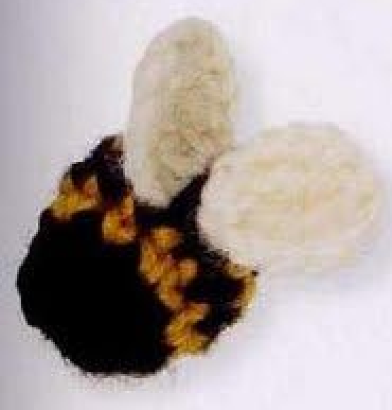
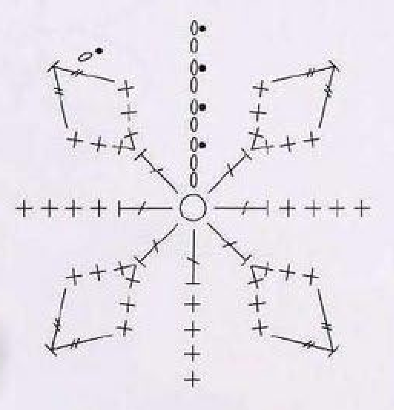
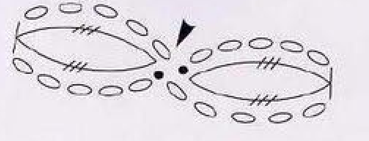
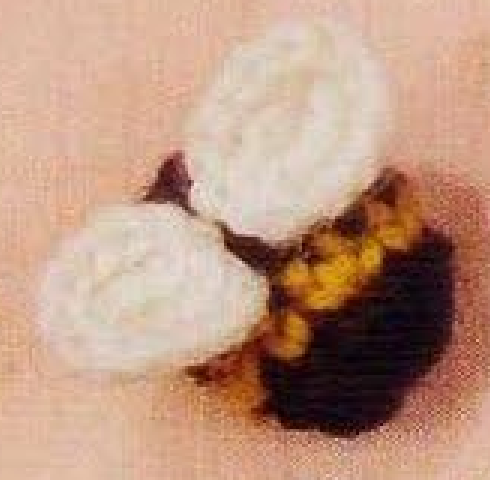
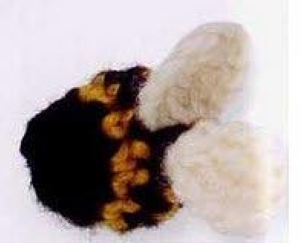

Crochet Bumblebee has a small padded black-and-yellow body and two white wings made from tall-stitch clusters. The body is flattened slightly and its opening is joined to form the head. This guide follows pattern 70 in Lesley Stanfield’s 100 Flowers to Knit & Crochet, preserving the five body rounds, yarn padding, wing recipe, and assembly in US crochet terminology.

Key Takeaways
- Use DK wool in black A, yellow B, and white C.
- The body starts with eight counted positions and increases to twelve.
- Black and yellow alternate through the body rounds at named joins.
- The final round uses US treble decreases across separate base stitches.
- Each white wing is a two-stitch US double-treble cluster in one chain base.
- Use yarn to fill the body, flatten it slightly, and join the head opening with A.
CROCHET BUMBLEBEE PATTERN
Project: One miniature wool bee with a striped padded body and two white wings. The source places it among intermediate designs. US terms are used below; finished size, hook, gauge, and overall yarn quantity are not specified.
| Skill level | Intermediate in the source. Practical focus: joined color rounds, very tall decreases, same-base clusters, and small-piece assembly. |
|---|---|
| Base size | 1 bee with 1 padded body and 2 white wings. Measurements are not specified. |
| Yarn | DK wool: black A, yellow B, white C. |
| Quantity, hook, gauge | Not specified. Choose a hook suited to the wool and assess the body fabric. |
| Extras | Yarn is used to fill the body. Scissors and a blunt needle assist head closure, wing attachment, and end securing. |
| US abbreviations | ch = chain; sc = single crochet; dc = double crochet; tr2tog = treble decrease over 2 bases; dtr = double treble crochet; sl st = slip stitch; RS = right side. UK dc = US sc; UK tr = US dc; UK dtr = US tr; UK trtr = US dtr. |
| Body round 1, RS | With A, make an adjustable ring. Ch 3, 7 dc in the ring; pull the end to close. With B, sl st in the top chain of the starting ch 3. 8 counted positions. Continue B. |
| Body round 2 | Ch 2, [2 sc in the next dc, sc in the next dc] 3 times, 2 sc in the next dc. With A, sl st in the top chain of the starting ch 2. 12 counted positions. Continue A. |
| Body round 3 | Ch 2, sc in each of the next 11 sc. With B, sl st in the top chain of the starting ch 2. Continue B. |
| Body round 4 | As round 3, making the closing sl st with A. Continue A. |
| Body round 5 | Ch 1, [tr2tog across the next 2 sc, sc in the next sc] 3 times; tr2tog across the next 2 sc; sl st in the starting ch 1. 8 counted positions. Fasten off invisibly. |
| White wings | With C, [ch 6, skip 5 chains, work a 2-stitch dtr cluster in the next chain, ch 5, sl st in the same chain as the cluster] twice. Fasten off invisibly. |
| Cluster and decrease distinction | A wing cluster closes 2 partial dtr in one base. A body tr2tog closes 2 partial tr worked over 2 consecutive sc bases. |
| Assembly | Use yarn to fill the body. With color joins underneath, flatten it slightly and use A to join the 2 sides of the opening for the head. Attach the wings with A. |
Understand the Body and Wings
The bee body is worked in five joined rounds. Its first black round uses US doubles, while the following yellow and black sections use singles. The last black round changes to tall decreases, which reduce the opening before it is joined to form the head.
The white wings are made as a connected pair. Each wing starts with a six-chain section and a same-base two-stitch cluster, followed by a five-chain side that returns to the cluster base. Repeat that complete sequence twice for two wings, rather than making four separate wing pieces.
The source fills the body with yarn, then flattens it slightly and positions the color joins underneath. This creates a small dimensional applique with a relatively flat presentation. It is not a large stuffed toy with separately crocheted head, legs, or antennae.
Gather DK Wool and Yarn for Padding
Use black A, yellow B, and white C DK wool. Black forms the starting body, alternating body section, final decrease round, head closure, and wing attachment. Yellow forms the two contrasting bands, and white is reserved for the connected wing pair.
The entry names yarn as the material used to fill the body. It does not specify wadding, a measured stuffing weight, or a separate padding shape. Keep suitable yarn available for this finishing step instead of adding a different required material to the source recipe.
Hook size, numerical gauge, total wool quantity, and finished bee dimensions are not supplied. Choose a hook appropriate to your wool and inspect the body fabric as it develops. It needs to support the small yarn filling while retaining readable tops for the final tall decreases.
Scissors and a blunt needle help with the head join and wing attachment. If the bee must fit a particular applique space, finish one sample before making several. Yarn thickness and individual tension can change its size even when all original counts are retained.
US Terms: Three Different Tall-Stitch Jobs
The original UK treble becomes US double in the first body round. UK double treble becomes US treble in the body’s final decreases. UK triple treble becomes US double treble in the white wing clusters. Keeping these three heights distinct is essential to the source construction.
A US double starts with one yarn over and uses two draw-through-two steps. A US treble starts with two yarn overs and uses three such steps. A US double treble starts with three yarn overs and uses four. The final body and wing operations leave the last step unfinished until their shared closure.
The two unfinished stitches in a body decrease are placed in separate consecutive singles. The two unfinished stitches in a wing cluster share one chain base. These operations both end with one joined top, but their base placements and stitch heights differ.
Terminology checkpoint: The body’s final decrease is US tr2tog over two singles. The wing is a two-stitch US dtr cluster in one chain. Substituting the same stitch and base route for both changes the pattern.
Step 1: Make the Eight-Position Black Round
With A, make an adjustable ring. With the right side facing, chain three and work seven US doubles into the ring. Pull the starting end to close the ring, then use B to slip stitch in the top chain of the starting three-chain rise.
The source counts eight positions, including the rise alongside seven actual doubles. Continue with yellow for the next round. The joining placement is the third chain of the rise, rather than its first chain or the first actual double.
Inspect the ring and stitch tops before increasing. A compact closed base is useful for the body, but it should not hide the tops that receive the yellow singles. Keep the black starting end clear while the new color is introduced at the closing join.
Step 2: Increase the Yellow Round to Twelve
Chain two with B. Work two singles in the next double and one single in the following double, repeating that pair three times. Work two singles in the next double after those pairs. This uses all seven actual black doubles.
With A, slip stitch into the top chain of the new two-chain rise. Continue black. The source’s total is twelve counted positions: the rise, nine actual singles from the three repeated pairs, and the final two singles.
Do not work another increase into the previous three-chain rise. The new rise is already counted in the total. Adding extra singles would change the twelve-position body section and leave too many bases for the final eight-position decrease round.
Increase checkpoint: Three increase-and-single pairs plus one final increase produce eleven actual yellow singles. The starting rise brings the stated total to twelve.

Step 3: Work the Black and Yellow Plain Rounds
For round 3, chain two with A and work one single in each of the next eleven singles. Use B to slip stitch into the top chain of the starting rise, then continue yellow. The starting rise is counted with the eleven actual singles as twelve positions.
Round 4 follows the same plain-round recipe, but make its closing slip stitch with A and continue black. These two rounds maintain the body width while alternating the colors. Do not increase again or add an extra plain stripe between them.
Keep the named joins grouped on the underside for the later assembly orientation. The pattern changes color at each closing slip stitch, not halfway through a round. A clean, consistent joining route makes it easier to identify the eleven actual singles for the final shaping.
Step 4: Prepare the US Treble Decrease
For a body tr2tog, yarn over twice and insert into the first stated single. Draw up a loop and complete the first two draw-through-two steps of the treble, leaving its last step unfinished. Begin a second partial treble in the next single in the same way.
After both partial trebles are worked, yarn over and draw through the three remaining loops to close them together. Two separate single bases have become one tall joined top. This is not a same-base fan, ordinary sc2tog, or skipped-stitch decrease.
The tall decrease can make the final body edge look different from the short plain rounds below it. Follow the specified height rather than replacing it with a single decrease because that seems more familiar for a small stuffed object. The original chart includes this taller shaping.
Step 5: Complete the Eight-Position Final Round
Chain one with A. Work a treble decrease across the next two singles, then one single in the next single. Repeat that decrease-and-single group three times in total. Finish with one more treble decrease across the next two singles.
Slip stitch into the starting chain one. The source counts eight positions: the opening chain, three decreased tops, three singles, and the separately written final decreased top. The groups consume the eleven actual singles from the preceding round.
Fasten off invisibly. Do not add a further numerical closing round; the remaining opening is used in the head assembly. Check the grouped decreases and the separately written final decrease before moving on to the wings and padding.
Final-round checkpoint: Three complete decrease-and-single groups are followed by one final decrease. The stated eight positions include the starting chain; it is not eight actual decreases.
Body Decreases and Wing Clusters Are Different
The body uses partial US trebles across separate single bases to narrow its opening. The wings use partial US double trebles in the same chain to create broad oval forms. Both close unfinished stitch tops together, but copying the body decrease into the wing would give the wrong height and base structure.
Step 6: Form the First White Wing Cluster
With C, chain six and skip five chains. Work a two-stitch US double-treble cluster in the next chain, which is the first chain of this six-chain section. Both partial double trebles share that one chain base.
For each partial double treble, yarn over three times, insert into the base, draw up a loop, and complete three draw-through-two steps. Leave the fourth and final step unfinished. After the second partial stitch is made, close the three remaining loops together with one yarn-over draw-through.
This produces one joined top from two very tall stitches. Do not complete both double trebles separately before attempting to pull their tops together. The shared closure belongs to the cluster construction itself, giving the source wing its compact tall center.
Step 7: Close the Chain Side and Make the Second Wing
After the cluster, chain five and slip stitch into the same chain as the cluster. This returns the second side of the wing to its first-chain base. The opening six-chain rise and five-chain return sit beside the cluster, giving it an elongated oval outline.
Repeat the entire six-chain, two-stitch cluster, five-chain, and same-base slip-stitch sequence once more. There are two repetitions in total and therefore two wings. The second repetition has its own new six-chain starting section and cluster base.
Fasten off invisibly after completing the pair. Keep the two white forms connected at their base route and inspect each for the same cluster height and chain sides. Do not introduce another body ring or make four wings because a natural bee has more complex anatomy.

Step 8: Fill and Slightly Flatten the Body
Use yarn to fill the body as the source directs. No numerical amount is supplied, so add enough to support the little shape while keeping the final opening manageable. Overfilling can spread the short body stitches or make the head seam difficult to join.
Orient the color joins underneath and flatten the body a little. This is a gentle shaping step rather than pressing the wool into a completely flat disc. Keep the black rear, yellow bands, and final black section recognizable from the visible side.
Check the body from front and back before joining the head opening. Padding should remain inside rather than protruding through the seam. If it distorts the stripe arrangement, adjust the yarn filling while the opening is still accessible instead of forcing the finished shape into place.
Step 9: Close the Head and Attach the Wings
With A, join the two sides of the opening for the head. The source forms the head by joining this existing body opening, not by crocheting a separate black sphere or adding another set of body rounds. Keep the join compact and the underside color changes below the visible surface.
Attach the white wings with A. Position their connected bases on the body as in the finished source example, with the two white ovals visible above the striped section. Sew through stable bases rather than pulling black attachment stitches across the broad white wing surfaces.
Inspect the attachment before trimming ordinary ends. The source gives no numerical sewing-stitch count, separate antenna recipe, legs, eyes, or smile. Keep the original bee’s simple body-and-wing presentation clear if you later choose optional decorative additions.

Troubleshoot the Small Pieces
The final body round will not fit
Count the eleven actual singles and the starting rise in the preceding round. The final groups consume three sets of three bases and one last pair, for eleven actual bases total. Extra plain stitches between decreases or an earlier accidental increase can disrupt this route.
The wing is too short or open at the top
Check the US double-treble height and cluster closure. Three initial yarn overs are needed for each partial stitch, and both unfinished tops are closed together. Two ordinary doubles or separately finished tall stitches do not produce the same source wing.
The body rolls when the wings are sewn on
Review the slight flattening and underside color-join orientation before tightening the attachments. The source uses a small padded body with a joined opening, so a heavily filled ball may be less stable in this presentation. Adjust the yarn filling and base positioning instead of adding an unprinted backing as a required step.

Optional Colors and Decorative Placement
Different shades can be optional substitutions while preserving the three original color roles, body rounds, and two-wing construction. An embroidered face, antennae, legs, additional wings, or a new backing changes the source design. Record those as personal additions rather than treating them as missing printed instructions.
Suggested uses include a small sewn accent on a bag, textile panel, or handmade accessory. These are added placement ideas, not complete projects supplied with Bumblebee. Test the slightly dimensional body on its intended surface and attach through stable back stitches without flattening the white wings.
Bumblebee at a Glance
- DK wool in black, yellow, and white.
- Five joined body rounds with eight and twelve counted positions.
- Final US treble decreases over separate bases.
- Two chain-sided US double-treble cluster wings.
- Yarn filling, slight flattening, black head closure, and black wing attachment.
Conclusion
Bumblebee’s small shape depends on correctly counted stripes and two different tall joined-top operations. Use separate bases for the body decreases, one shared chain for each wing cluster, and yarn for the padding before joining the head. The compact card includes the complete source construction in US terms. Click the Pin to see the pattern again when you are ready to make your little bee.
Source and Tags
Source: Lesley Stanfield, 100 Flowers to Knit & Crochet, pattern 70 Bumblebee. Instructions and charts are on printed page 85, PDF page 79; the directory example is on printed page 34, PDF page 29. A partial finished bee also appears at the edge of printed page 84, PDF page 78. All photographs show completed work. US translation and additional practical guidance accompany the source sequence.
Crochet BumblebeeCrochet BeeWool AppliqueTall-Stitch ClustersStriped BodyUS Crochet Terms